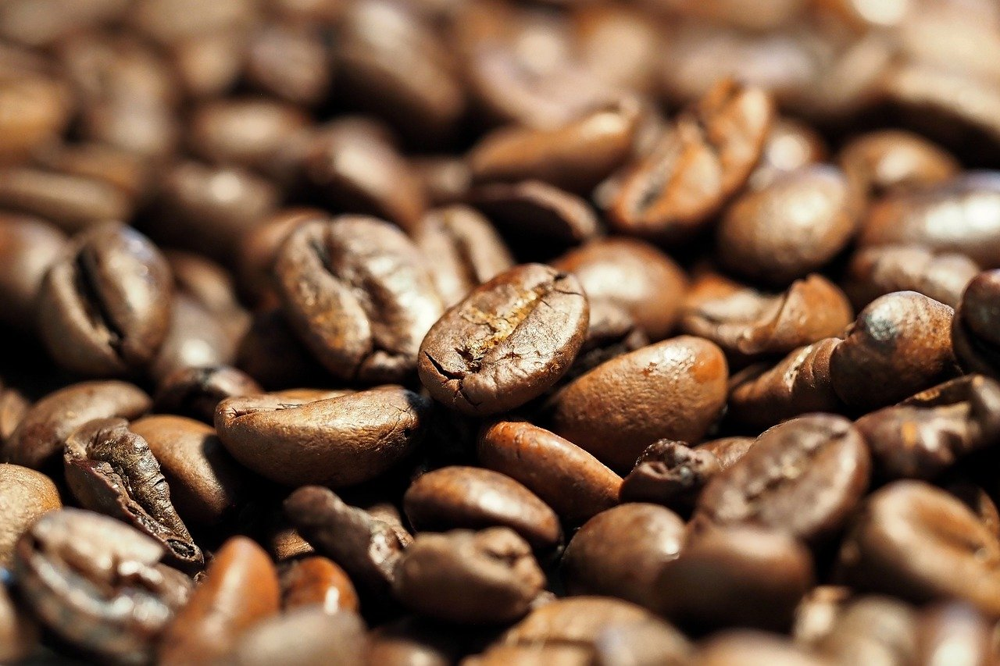

Colombian Coffee:
Taste the Tradition
About
Free trade Colombian coffee beans are not just a cup of coffee; they represent a story of sustainability, quality, and community empowerment. Sourced from the lush landscapes of Colombia, these beans are cultivated by local farmers who adhere to ethical farming practices and receive fair compensation for their labor. Each sip of Colombian coffee carries the rich flavors and aromas of the region's unique terroir, characterized by notes of chocolate, caramel, and citrus. Beyond taste, purchasing free trade Colombian coffee beans supports the livelihoods of farming communities, promotes environmental stewardship, and fosters economic development. It's more than just coffee; it's a commitment to fairness, integrity, and exceptional taste.
Why Buy?
- Rich Flavor Profile: Colombian coffee is renowned for its balanced and nuanced flavor profile, often featuring notes of chocolate, caramel, citrus, and nuts, which result from the country's diverse microclimates and high-altitude growing regions.
- High-Quality Arabica Beans: Colombia predominantly cultivates Arabica coffee beans, prized for their smooth, mild flavor and low acidity. The country's ideal growing conditions contribute to the exceptional quality of its coffee beans.
- Unique Terroir: Colombia's mountainous terrain, volcanic soils, and ample rainfall create an optimal environment for coffee cultivation. Each region imparts distinct characteristics to the coffee, resulting in a diverse range of flavor profiles.
- Fair Trade Practices: Many Colombian coffee farmers participate in fair trade programs, ensuring they receive fair compensation for their labor and fostering sustainable livelihoods for farming communities.
- Sustainable Farming Methods: Colombian coffee farmers often employ environmentally friendly farming practices, such as shade-grown cultivation, organic farming, and water conservation, to minimize their ecological impact.
- Cultural Significance: Coffee is deeply ingrained in Colombian culture and heritage, playing a central role in social gatherings, traditions, and celebrations. The country's coffee-growing regions offer immersive experiences for visitors to learn about the coffee-making process and cultural significance.
- Economic Importance: Coffee production is a significant driver of Colombia's economy, providing employment opportunities for thousands of people and contributing to rural development and infrastructure.
- Certification Programs: Many Colombian coffee farms are certified by organizations such as Rainforest Alliance, Fair Trade, and UTZ, which attest to their commitment to environmental sustainability, social responsibility, and quality standards.
- Global Recognition: Colombian coffee enjoys global recognition and demand for its exceptional quality, consistently ranking among the world's top coffee-producing countries and winning prestigious awards for its superior beans.
Buy
Light Roast
Add to Cart
Medium Roast

Add to Cart
Dark Roast
Add to Cart